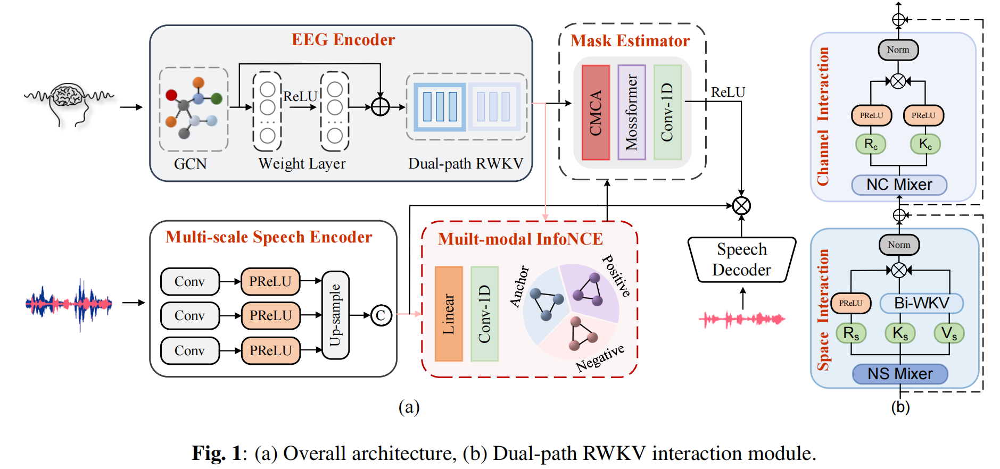

Brain-assisted target speaker extraction can selectively extract the target speaker's speech by decoding the listener's brain activity from electroencephalogram (EEG) signals. However, EEG has low signal-to-noise ratio, high dimensionality, and non-stationarity, making it very challenging to efficiently learn advanced features. To address these limitations, this paper proposes a dual-path Receptance Weighted Key Value-like (RWKV) EEG encoder designed to mitigate the inefficiency and difficulty of modeling long sequences and weak correlations inherent in EEG. Specifically, the encoder overcomes the limitations of traditional EEG encoders by applying cortical interaction and temporal modules, enabling the model to simultaneously capture multidimensional spectrotemporal informtion in EEG signals with linear computational complexity. Experiments on three publicly datasets show that the proposed model significantly outperforms current state-of-the-art methods in multiple evaluation metrics.
The model is evaluated with Cocktail Party dataset :
| Mixture Speech | Ground Truth | Extraction Speech |
|---|---|---|